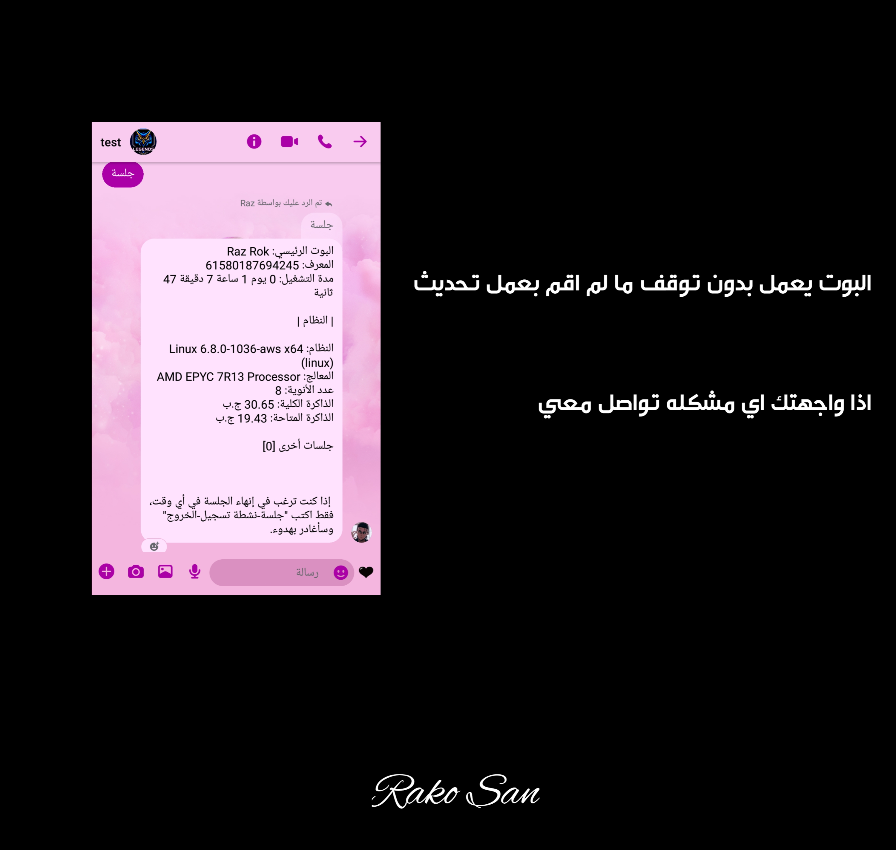

دليل خطوة بخطوة
١. قم بتثبيت متصفح Kiwi من متجر Google Play ثم قم بتشغيل التطبيق.

٢. بعد تشغيل التطبيق، انتقل إلى وظيفة البحث وأدخل الرابط التالي: https://github.com/c3cbot/c3c-fbstate/archive/refs/tags/1.5.zip

٣. بعد الإدخال، ستظهر مطالبة تطلب منك تنزيل الملف؛ تابع بالنقر على خيار التنزيل.

٤. بعد اكتمال التنزيل، اضغط على الثلاث نقاط في الزاوية اليمنى العليا، ثم اختر خيار "الإضافات".

٥. في قائمة الإضافات، قم بتمكين وضع المطور، ثم انقر على زر "+" لإضافة الإضافة من ملف zip أو crx أو user.js.

٦. حدد ملف zip الذي تم تنزيله مسبقًا وانقر عليه لبدء عملية التثبيت.

٧. بعد اكتمال التثبيت، راقب أداة C3C fbstate في الزاوية اليمنى السفلى وقم بتفعيلها بالنقر عليها.

٨. بعد التفعيل، انتقل إلى Facebook.com باستخدام متصفح Kiwi وقم بتسجيل الدخول إلى حسابك.

٩. بعد تسجيل الدخول، افتح القائمة بالنقر على الثلاث نقاط في الزاوية اليمنى العليا، ثم مرر للأسفل وابحث عن أداة C3C fbstate.

١٠. سيتم توجيهك إلى صفحة أخرى؛ ابحث عن خيار "نسخ إلى الحافظة" وانقر عليه لنسخ الكوكيز الخاصة بك للاستخدام لاحقًا.

١١. الصق الكوكيز المنسوخة في https://razer-bot-soyeon.onrender.com، ثم مرر للأسفل لمراجعة الشروط وسياسة الخصوصية بعناية.

١٢. بعد مراجعة الشروط وسياسة الخصوصية بعناية، حدد المربع لتأكيد فهمك ثم أرسل المعلومات.
١٣. بالتأكيد، أدخل "ai" لتأكيد حالة تشغيل البوت. إذا استجاب، تهانينا على التحقق الناجح.

ملاحظة:
• في حال واجه البوت مشكلة في تسجيل الدخول أثناء أول محاولة، قد يكون الحساب مقفل. فقط قم بفتحه وأعد المحاولة.
• إذا كان البوت مسجل الدخول بالفعل إلى Facebook أو FB Lite، تجنب تسجيل الدخول من أجهزة أخرى أو تسجيل الخروج.
• أثناء تشغيل البوت، تجنب تسجيل الدخول إلى حساب البوت أو تغيير كلمة المرور.
• يرجى العلم أنه قد تحدث حالات قفل أو تعليق للحساب، ونحن غير مسؤولين عن ذلك.
• يرجى العلم أنه قد تحدث حالات قفل أو تعليق للحساب، ونحن غير مسؤولين عن ذلك.
لتسجيل بوت آخر أو ذكاء اصطناعي، فقط اضغط على "تسجيل الخروج" (وليس حذف appstate) للحصول على appstate جديد لحساب آخر.